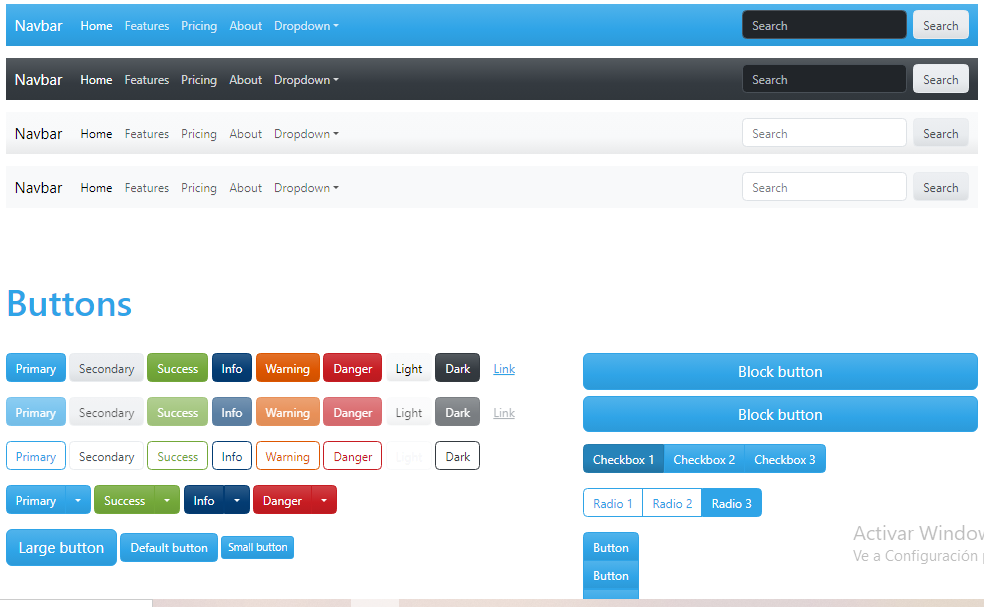
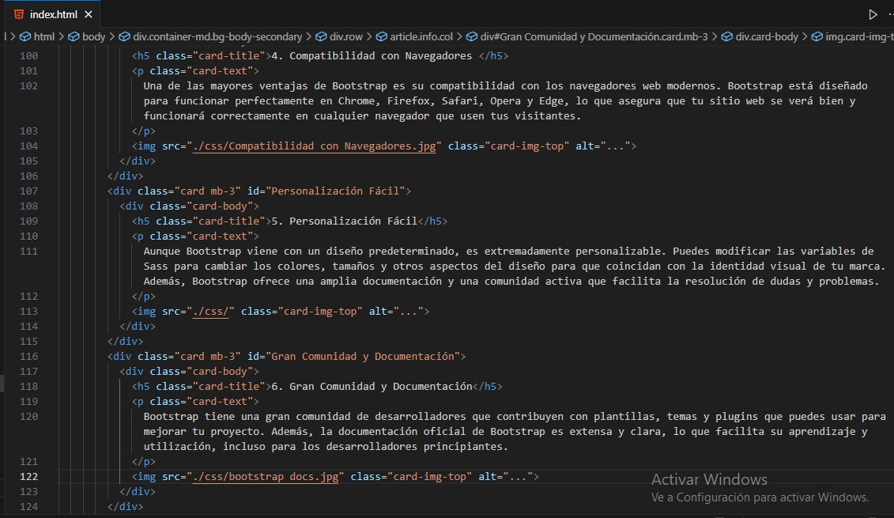

¿Por Qué Usar Bootstrap?
1. Diseño Responsivo Integrado
Bootstrap es un framework de CSS que facilita la creación de sitios web responsivos, es decir, sitios que se adaptan automáticamente a diferentes tamaños de pantalla, desde dispositivos móviles hasta pantallas de escritorio grandes. Esto asegura una excelente experiencia de usuario sin importar el dispositivo.
2. Sistema de Cuadrícula (Grid System)
Una de las características más poderosas de Bootstrap es su sistema de cuadrícula. Este sistema permite dividir la pantalla en 12 columnas y facilita la organización del contenido de manera flexible y coherente. Con la cuadrícula de Bootstrap, es sencillo crear diseños complejos sin necesidad de escribir código CSS desde cero.
3. Componentes Pre-diseñados
Bootstrap incluye una amplia gama de componentes pre-diseñados como botones, formularios, menús de navegación, alertas, modales, y muchos más. Estos componentes son fáciles de personalizar y permiten a los desarrolladores ahorrar tiempo y esfuerzo en la creación de elementos comunes en una página web.
4. Compatibilidad con Navegadores
Una de las mayores ventajas de Bootstrap es su compatibilidad con los navegadores web modernos. Bootstrap está diseñado para funcionar perfectamente en Chrome, Firefox, Safari, Opera y Edge, lo que asegura que tu sitio web se verá bien y funcionará correctamente en cualquier navegador que usen tus visitantes.

5. Personalización Fácil
Aunque Bootstrap viene con un diseño predeterminado, es extremadamente personalizable. Puedes modificar las variables de Sass para cambiar los colores, tamaños y otros aspectos del diseño para que coincidan con la identidad visual de tu marca. Además, Bootstrap ofrece una amplia documentación y una comunidad activa que facilita la resolución de dudas y problemas.
6. Gran Comunidad y Documentación
Bootstrap tiene una gran comunidad de desarrolladores que contribuyen con plantillas, temas y plugins que puedes usar para mejorar tu proyecto. Además, la documentación oficial de Bootstrap es extensa y clara, lo que facilita su aprendizaje y utilización, incluso para los desarrolladores principiantes.

7. Desarrollo Rápido
Gracias a sus componentes pre-diseñados y su sistema de cuadrícula, Bootstrap permite un desarrollo rápido de prototipos y sitios web completos. Esto es especialmente útil en entornos de desarrollo ágil, donde el tiempo es un factor crítico.
